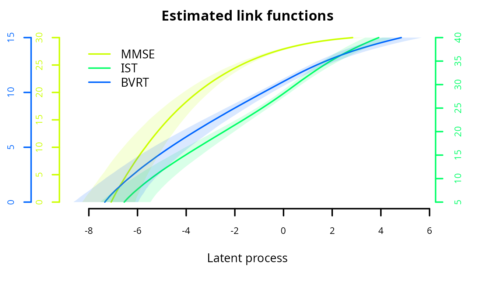
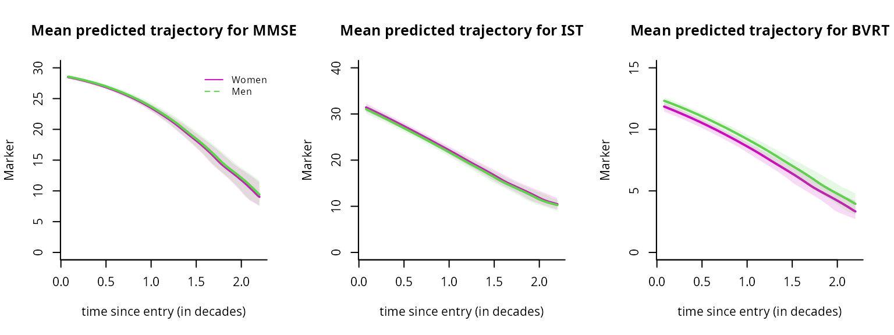

How to estimate a latent process mixed model for multivariate markers using multlcmm function
Source:vignettes/latent_process_model_with_multlcmm.Rmd
latent_process_model_with_multlcmm.RmdBackground and definitions
Each dynamic phenomenon can be characterized by a latent process \((\Lambda(t))\) which evolves in continuous time \(t\). Sometimes, this latent process is measured through several markers so that the latent process is their common factor.
Function multlcmm treats this idea and extend the linear mixed model theory to several markers measuring the same underlying quantity, these markers not being necessarily Gaussian.
The latent process mixed model for multivariate markers
The latent process mixed model is introduced in Proust-Lima et al. (2006 - https://doi.org/10.1111/j.1541-0420.2006.00573.x, 2013 - https://doi.org/10.1111/bmsp.12000 and 2022 - https://doi.org/10.1016/j.ymeth.2022.01.005 ).
The quantity of interest defined as a latent process is modeled according to time using a linear mixed model:
\[\Lambda(t) = X(t) \beta + Z(t)u_i +w_i(t)\]
where:
- \(X(t)\) and \(Z(t)\) are vectors of covariates (\(Z(t)\) is included in \(X(t)\));
- \(\beta\) are the fixed effects (i.e., population mean effects);
- \(u_i\) are the random effects (i.e., individual effects); they are distributed according to a zero-mean multivariate normal distribution with covariance matrix \(B\);
- \((w_i(t))\) is a Gaussian process that might be added in the model to relax the intra-subject correlation structure.
This structural model for \(\Lambda(t)\) according to time and covariates is exactly the same as in the univariate case.
Now, instead of defining one equation of observation, we define K equations of observation for the K different markers with \(Y_{ijk}\) the observation for subject \(i\), marker \(k\) and occasion \(j\). As in the univariate case, several types of markers can be handled by defining a marker-specific link function \(H_{k}\). The marker-specific equation of observation also includes potentially some contrasts \(\gamma_k\) on covariates and a marker and subject specific random intercept so that:\[Y_{ijk} = H_{k}(~ \Lambda(t_{ijk})+ X_{cijk}\gamma_{k} + \alpha_{ik} + \epsilon_{ijk} ~ ; \eta_{k}) \]
where:
- \(\alpha_{ik} \tilde{} N(0,\sigma_k^2)\)
- \(X_{cijk}\) vector of covariates
- \(\gamma_k\) are contrasts (with the sum over \(k\) equal to 0)
- \(t_{ijk}\) the time of measurement for subject \(i\), marker \(k\) and occasion \(j\);
- \(\epsilon_{ijk}\) an independent Gaussian error with mean zero and variance \(\sigma_{\epsilon_k}^2\);
- \(H_k\) the link function (parameterized by \(\eta_k\)) that transforms the latent process into the scale and metric of marker \(k\).
The link functions are the same as in the univariate case (in lcmm). For continuous outcomes, \(H^{-1}\) is a parametric family of increasing monotonic functions among:
- the linear transformation: this reduces to the linear mixed model (2 parameters)
- the Beta cumulative distribution family rescaled (4 parameters)
- the basis of quadratic I-splines with m knots (m+2 parameters)
For binary and ordinal outcomes, \(H_k\) links each level of the variable with an interval of values for the latent process plus measurement errors. This corresponds to the (cumulative) probit model.
We describe below a case with continuous link functions. For ordinal markers, see vignette.
Example with cognitive process
In this example, we study cognitive trajectory over time when cognition is defined as the common factor underlying three psychometric tests: MMSE, BVRT and IST. Here the timescale is years since entry into the cohort, the trajectory is assumed quadratic in time (both at individual and population level) and the model is adjusted for \(age\) at entry. To further investigate the effect of gender, both mean effects on the common factor and differential effects (contrasts) on each marker are included (not in interaction with time in this example).
Model considered :
\[Y_{ijk} = H_k(~ \beta_{1}t_{ij} + \beta_{2}t_{ij}^2 +\beta_{3}age75_{i} + \beta_{4}male_{i} +\gamma_{k}male_{i} \\ +u_{0i}+u_{1i}t_{ij}+u_{2i}t_{ij}^2+ \alpha_{ik} + \omega_i(t_{ijk}) +\epsilon_{ijk} ~~, \eta_k)\]
Where :
\(u_{i}\tilde{}N(0,B)\) and V(\(u_{0i}\))=1, \(\omega_i(t)\) is a Brownian process, \(\alpha_{ik}\tilde{}N(0,\sigma_k^2)\) and for k = 1,2,3: \(Y_{ij1}= MMSE_{ij}\) , \(Y_{ij2}= IST_{ij}\) and \(Y_{ij3}= BVRT_{ij})\)
Estimation with different link functions
We first create the variable time and recenter and scale age to avoid numerical problems
paquid$time <- (paquid$age - paquid$age_init)/10
paquid$age75 <- (paquid$age_init - 75)/10linear link functions
By default, all the link functions are set to linear:
mult_lin <- multlcmm(MMSE + IST + BVRT ~ age75 + male + time + I(time^2/10) + contrast(male), random =~ time +I(time^2 / 10), subject='ID', data = paquid, randomY = TRUE, cor = BM(time))
nonlinear link functions
Depending on the nature of the data, some nonlinear link functions may be necessary. Here for instance, the MMSE is highly skewed:
par(mfrow=c(1,3))
hist(paquid$MMSE, breaks=31,main="MMSE distribution")
hist(paquid$IST, breaks=41,main="IST distribution")
hist(paquid$BVRT, breaks=16, main="BVRT distribution")As in the univariate case, Beta CDF or splines can be considered. The link function family can either be the same for all the markers (even if the parameters will be different):
# Example with Beta
mult_beta <- multlcmm(MMSE + IST + BVRT ~ age75 + male + time + I(time^2/10) + contrast(male), random =~ time + I(time^2/10), subject='ID', data = paquid, randomY = TRUE, cor = BM(time), link = 'beta')Or the link functions can be chosen differently. For instance,
Fixing some transformation parameters
Note that the splines transformation may sometimes involve parameters so close to 0 that it entails a lack of convergence (since the parameter is at the boundary of the parameter space). This often happens with MMSE. For instance, in the example below, convergence cannot be reached easily because the third parameter of MMSE transformation is lower than \(10^{-4}\).
# with splines
mult_splines <- multlcmm(MMSE + IST + BVRT ~ age75 + male + time + I(time^2/10) + contrast(male), random =~time + I(time^2/10), subject='ID', data = paquid, randomY = TRUE, cor = BM(time), maxiter=50, link = c('3-quant-splines'))This problem can be easily dealt with by fixing this parameter with posfix option. To do so, the position of the parameter can be identified from the vector of estimates (21st parameter here):
mult_splines$best
#> age75 male time I(time^2/10) contrast11
#> -1.010112e+00 1.517389e-01 -1.118084e+00 -2.478814e+00 -5.978284e-02
#> contrast12 varcov 1 varcov 2 varcov 3 varcov 4
#> -2.512760e-01 -1.106827e-01 1.646540e+00 3.635506e-02 -5.852103e+00
#> varcov 5 cor1 std.err 1 std.err 2 std.err 3
#> 3.512056e+01 9.040474e-01 9.131173e-01 8.691138e-01 1.312155e+00
#> std.randomY1 std.randomY2 std.randomY3 I-splines1 I-splines2
#> 5.219795e-01 8.013844e-01 8.154404e-01 -6.345444e+00 9.980752e-01
#> I-splines3 I-splines4 I-splines5 I-splines1 I-splines2
#> -3.231409e-05 2.443017e+00 1.370905e+00 -6.074106e+00 1.070865e+00
#> I-splines3 I-splines4 I-splines5 I-splines1 I-splines2
#> -2.083883e+00 1.500616e+00 -1.398814e+00 -6.608395e+00 9.986261e-01
#> I-splines3 I-splines4 I-splines5
#> 1.923664e+00 1.991036e+00 1.529003e+00And the model can be refitted from these estimates and the newly fixed parameter:
# with splines
mult_splines2 <- multlcmm(MMSE + IST + BVRT ~ age75 + male + time + I(time^2/10) + contrast(male), random =~time + I(time^2/10), subject='ID', data = paquid, randomY = TRUE, cor = BM(time), maxiter=50, link = c('3-quant-splines'), posfix=21, B=mult_splines$best)With this constraint, the model converges correctly.
Comparison of the models
Objects mult_lin, mult_beta, mult_betaspl, ‘mult_splines2’ are multivariate latent process mixed models that assume the exact same trajectory for the underlying latent process but different link functions. As in the univariate case, the models can be compared using information criteria. The summarytable give us such information.
summarytable(mult_lin,mult_beta,mult_betaspl,mult_splines2, which =c("loglik", "conv", "npm", "AIC"))
loglik conv npm AIC
mult_lin -15379.35 1 24 30806.70
mult_beta -14374.60 1 30 28809.21
mult_betaspl -14373.66 1 32 28811.33
mult_splines2 -14408.50 1 32 28881.00
Models involving Beta transformations and splines transformations seem to fit a lot better in terms of AIC than the linear transformations showing the departure from normality.
The transformations can be plotted and compared between models:
par(mfrow=c(1,1))
col <- rainbow(4)
plot(mult_splines2, which = "linkfunction", col = c(col[2],col[3],col[4]), lwd =1,lty=4)
plot(mult_lin,which="linkfunction", col = c(col[2],col[3],col[4]), lwd = 1,lty=2,add=TRUE)
plot(mult_beta,which="linkfunction", col = c(col[2],col[3],col[4]), lwd = 2,lty=3,add=TRUE)
plot(mult_betaspl,which="linkfunction", col = c(col[2],col[3],col[4]), lwd = 1,lty=1,add=TRUE)
legend(x="bottomright",lty=c(2,3,4,1),legend=c("linear","beta","splines","beta/splines"),bty="n")
Except from the linear transformations, all the estimation transformations are really close.
Postfit outputs
Estimated link functions:
Confidence intervals of the link functions can be obtained by the Monte Carlo method:
col <- rainbow(5)
CIlink <- predictlink(mult_betaspl)
plot(CIlink, col = c(col[2],col[3],col[4]), lwd = 2, shades = TRUE)
Summary
The summary of the model includes convergence, goodness of fit criteria and estimated parameters.
summary(mult_betaspl)
General latent class mixed model
fitted by maximum likelihood method
multlcmm(fixed = MMSE + IST + BVRT ~ age75 + male + time + I(time^2/10) +
contrast(male), random = ~time + I(time^2/10), subject = "ID",
randomY = TRUE, link = c("beta", "3-quant-splines", "3-quant-splines"),
cor = BM(time), data = paquid, nproc = 10)
Statistical Model:
Dataset: paquid
Number of subjects: 500
Number of observations: 6216
Number of latent classes: 1
Number of parameters: 32
Link functions: Standardised Beta CdF for MMSE
Quadratic I-splines with nodes 5 27 40 for IST
Quadratic I-splines with nodes 0 11 15 for BVRT
Iteration process:
Convergence criteria satisfied
Number of iterations: 31
Convergence criteria: parameters= 1e-07
: likelihood= 1.5e-07
: second derivatives= 5.1e-12
Goodness-of-fit statistics:
maximum log-likelihood: -14373.66
AIC: 28811.33
BIC: 28946.2
Maximum Likelihood Estimates:
Fixed effects in the longitudinal model:
coef Se Wald p-value
intercept (not estimated) 0.00000
age75 -1.09189 0.11368 -9.605 0.00000
male 0.14430 0.11934 1.209 0.22659
time -1.24025 0.19076 -6.502 0.00000
I(time^2/10) -2.39711 0.98528 -2.433 0.01498
Contrasts on male (p=3e-04)
MMSE -0.07360 0.06931 -1.062 0.28829
IST -0.26698 0.07854 -3.399 0.00068
BVRT** 0.34058 0.08810 3.866 0.00011
Variance-covariance matrix of the random-effects:
(the variance of the first random effect is not estimated)
intercept time I(time^2/10)
intercept 1.00000
time 0.05618 1.53473
I(time^2/10) -0.77856 -5.22729 32.31854
coef Se
BM standard error: 0.98003 0.13326
MMSE IST BVRT
Residual standard error: 1.01982 0.93048 1.42284
Standard error of the random effect: 0.57605 0.85186 0.89027
Parameters of the link functions:
coef Se Wald p-value
MMSE-Beta1 1.41416 0.07051 20.056 0.00000
MMSE-Beta2 -0.25052 0.08346 -3.002 0.00269
MMSE-Beta3 0.45879 0.02586 17.741 0.00000
MMSE-Beta4 0.06439 0.00580 11.095 0.00000
IST-I-splines1 -6.51526 0.52193 -12.483 0.00000
IST-I-splines2 1.10955 0.15664 7.083 0.00000
IST-I-splines3 2.14896 0.09800 21.928 0.00000
IST-I-splines4 1.56009 0.08373 18.633 0.00000
IST-I-splines5 1.44628 0.07305 19.799 0.00000
BVRT-I-splines1 -7.31210 0.68892 -10.614 0.00000
BVRT-I-splines2 1.13661 0.26027 4.367 0.00001
BVRT-I-splines3 1.97351 0.12641 15.611 0.00000
BVRT-I-splines4 2.08216 0.09703 21.459 0.00000
BVRT-I-splines5 1.58945 0.07545 21.065 0.00000
** coefficient not estimated but obtained from the others as minus the sum of them
From the estimates, the underlying cognition has a quadratic trajectory over time, older subjects at baseline have systematically lower cognitive level. There is no difference according to gender. However, there are significantly differential effects of gender on psychometric tests (p=0.0003) with a systematically higher BVRT for men and higher IST levels for women.
Variance explained
For multivariate data, the latent process is the common underlying factor of the different markers. Thus, we can compute the residual variance of each marker explained the latent process. This variance explained is conditional on the covariates and computed for a specific time.
VarExpl(mult_betaspl, data.frame(time=0))
class1
%Var-MMSE 42.16100
%Var-IST 38.58841
%Var-BVRT 26.19821For example, the common factor explained 42% of MMSE residual variation while it explained 26% of the BVRT residual variation at time 0.
Graph of predicted trajectories for the markers
As with lcmm function, predicted trajectories of the markers can be computed according to a covariate profile and then plotted.
datnew <- data.frame(time=seq(0.08,2.2,length=100))
datnew$age_init<-seq(65,95, length=100)
datnew$age75 <- ((datnew$age_init - 75)/10)
datnew$male <- 0
predict_women<-predictY(mult_betaspl,newdata=datnew,var.time='time',draws=TRUE)
datnew$male <- 1
predict_men <- predictY(mult_betaspl,newdata=datnew,var.time='time',draws=TRUE)
par(mfrow=c(1,3))
plot(predict_women, lwd=c(2,1), type='l', col=6, ylim=c(0,30), xlab='time since entry (in decades)', ylab='Marker', bty='l', legend=NULL, shades=TRUE, outcome = 1, main='Mean predicted trajectory for MMSE')
plot(predict_men, lwd=c(2,1), type='l', col=3, shades=TRUE, outcome = 1, add=TRUE)
legend(1.5, 30, legend=c("Women", "Men"), col=c(6,3), lty=1:2, cex=0.8,bty="n")
plot(predict_women, lwd=c(2,1), type='l', col=6, ylim=c(0,40), xlab='time since entry (in decades)', ylab='Marker', bty='l', legend=NULL, shades=TRUE, outcome = 2, main='Mean predicted trajectory for IST')
plot(predict_men, lwd=c(2,1), type='l', col=3, shades=TRUE, outcome = 2, add=TRUE)
plot(predict_women, lwd=c(2,1), type='l', col=6, ylim=c(0,15), xlab='time since entry (in decades)', ylab='Marker', bty='l', legend=NULL, shades=TRUE, outcome = 3, main='Mean predicted trajectory for BVRT')
plot(predict_men, lwd=c(2,1), type='l', col=3, shades=TRUE, outcome = 3, add=TRUE)
Goodness of fit: graph of the residuals
As in any mixed model, we expect the subject-specicif residuals (bottom right panel) to be Gaussian.
plot(mult_betaspl, cex.main=0.8)Goodness of fit: graph of the predictions versus observations
The mean predictions and observations can be plotted according to time. Note that the predictions and observations are in the scale of the latent process (observations are transformed with the estimated link functions):
par(mfrow=c(1,3))
plot(mult_betaspl, which="fit", var.time="time", bty="l", xlab="time since entry (in decades)", cex.lab=1.1, break.times=8, ylab="latent process", lwd=2, marg=FALSE, ylim=c(-2,0.0), xlim=c(0.1,2), shades = TRUE, outcome = 1, col=2, main="MMSE predictions vs observations")
plot(mult_betaspl, which="fit", var.time="time", bty="l", xlab="time since entry (in decades)", cex.lab=1.1, break.times=8, ylab="latent process", lwd=2, marg=FALSE, ylim=c(-2,0.3), xlim=c(0.1,2), shades = TRUE, outcome = 2, col=3, main="IST predictions vs observations")
plot(mult_betaspl, which="fit", var.time="time", bty="l", xlab="time since entry (in decades)", cex.lab=1.1, break.times=8, ylab="latent process", lwd=2, marg=FALSE, ylim=c(-1.5,0.5), xlim=c(0.1,2), shades = TRUE, outcome = 3, col=4, main="BVRT predictions vs observations")
To go further …
heterogeneous profiles of trajectories
The latent process mixed model for multivariate markers extends to the heterogeneous case with latent classes. The same strategy as explained with hlme can be used.
joint analysis of a time to event
The latent process mixed model for multivariate markers extends to the case of a joint model. This is done in Jointlcmm when one latent process is involved or mpjlcmm when multivariate latent processes are considered.